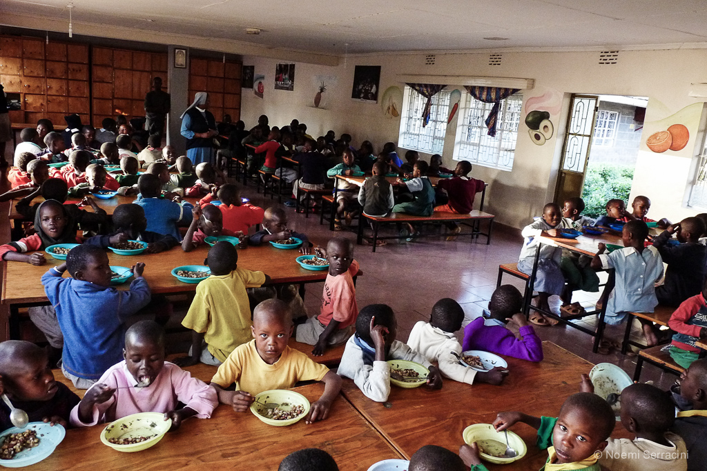

Home / Where your money goes
Food, fees, uniforms, medicine, water
The farm covers part of the food bill. The rest is bought, and that is where a donation lands.
What it is spent on
- School fees and suppliesNursery through to university, plus uniforms, books and term supplies at the state schools nearby.
- FoodWhat the farm does not produce: cooking oil, salt, flour, sugar, and the shortfall when a harvest is poor.
- Medicine and clinicTreatment for the children who are HIV positive, and the ordinary illnesses of a hundred children.
- Water and electricityPartly covered by selling farm surplus at the market in Ndaragwa. Not always covered.
- ClothingMuch of it sewn and repaired at the home, but the cloth still has to be bought.
- The farmSeed, animal feed, and the repairs that keep the irrigation and the solar working.
No pie chart, and here is why
This site publishes no financial figures: no cost per child, no percentage breakdown. The sources it was built from were written in different years by different organisations and do not agree even on how many children live at the home.
A children's home should publish a budget it can stand behind, or publish nothing. Averaging old documents into something tidy would look more professional and tell you less.
What the home can give you, if you ask, is its current budget and what it spent last year.
What to ask for
- Before a large gift
- The current annual budget, and the accounts for last year
- For a specific gift
- The quote for that item, and the receipt once it is bought
- For a standing gift
- What a term of school costs, per child
- Registration
- The CBO certificate number, which any funder will ask for
Why there is a hole in the budget
Rotary International supported the home for ten years and stopped in November when the agreement expired. That money had paid for buildings, the solar panels, the irrigation, the scholarships and part of the running costs. The Standard reported at the time that the home was on the brink of closure.
The Italian organisations and Esharelife in Britain have kept going, but they were never covering everything. The farm covers what a farm covers.